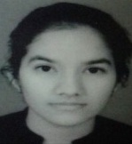

himakkshijain@gmail.com
+91-9461430884
To obtain a position that will allow me to utilise my technical skills and enhance them. I need a platform that will enhance my willingness to learn subjects related to my branch conceptually and in depth and further imparting my knowledge to other curious brains which will improve my teaching skills as well.
| DEGREE | INSTITUTE/COLLEGE | BOARD/UNIVERSITY | SCORE/SGPA | YEAR OF PASSING |
|---|---|---|---|---|
| B.Tech(CSE) | Maulana Azad National Institute of Technology, Bhopal,MP | - | 8.24/10.00 | 2023 |
| HSC | Nalanda Academy, Kota, Rajasthan | CBSE | 90.40/100.00 | 2018 |
| SSC | Sophia Secondary School, Kota, Rajasthan | CBSE | 10.00/10.00 | 2016 |